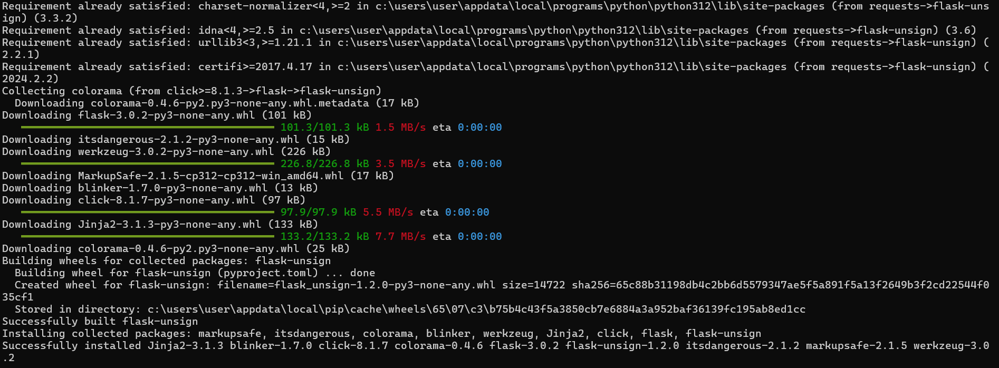

[WRITE - UP]
Python Flask là một micro-framework được viết bằng ngôn ngữ lập trình Python dùng cho các nhà phát triển web, Flask dựa trên bộ công cụ Werkzeg WSGI và template engine Jinja2, Flask hỗ trợ rất nhiều các tiện ích mở rộng như tích hợp CSDL, hệ thống upload, xác thực, template, email…
Flask-Unsign là một thư viện Python được sử dụng trong ứng dụng web Flask để giải mã các cookie được tạo bằng itsdangerous, một thư viện con của Flask được sử dụng để ký và giải mã dữ liệu nhạy cảm như cookie. Khi bạn ký một cookie trong Flask bằng itsdangerous, nó thường được mã hóa để ngăn chặn các cuộc tấn công như manipulations hoặc forgeries.
Vào challeng sẽ có 1 trang như thế này, vì không phải là admin nên không thể tìm được gì ở đây
Mình dùng Cookie-Editor để xem challenge có cookie gì không, thì có một cookie tên là session, đây là tên của biến mặc định để lưu trữ phiên trong Flask.
Phiên này bao gồm ba phần, cách nhau bằng dấu chấm. Rất giống với Json Web Token (JWT), nhưng hơi khác một chút. Đại diện cho một chuỗi như "payload.timestamp.signature".
Đối với Flask, thì payload được chứa trong phần đầu tiên, mình dùng Base64 để decode thì được như sau
Tiếp theo chúng ta cần tìm được Key để tạo một cookie mới với admin = true, mình dùng BruteForce
Challenge này các bạn có thể dùng Linux, nhưng không hiểu sao Linux của mình không chạy được Flask mặc dù đã install thành công, nên ở đây mình sẽ dùng CMD
pip3 install flask-unsign

Thử decode lại cookie xem Flask có chạy ok không
Ok rồi, nếu các bạn dùng Linux thì wordlist có sẵn rồi, còn nếu dùng Window thì phải tải về nhé
pip3 install flask-unsign[wordlist]
Tiến hành BruteForce lấy Key thôi nào !!!!
flask-unsign --unsign --cookie 'eyJhZG1pbiI6ImZhbHNlIiwidXNlcm5hbWUiOiJndWVzdCJ9.ZhCeUw. Hz3IZrH4b98QQAQDC916v2iec0A'
Đã có Key, giờ thì tạo cookie mới với admin rồi lấy Flag thôi..
flask-unsign --sign --cookie "{'admin': 'true', 'username': 'admin'}" --secret 's3cr3t'
Giờ thì thay đổi cookie và lấy Flag thui
Flag: Fl4sK_mi5c0nfigur4ti0n